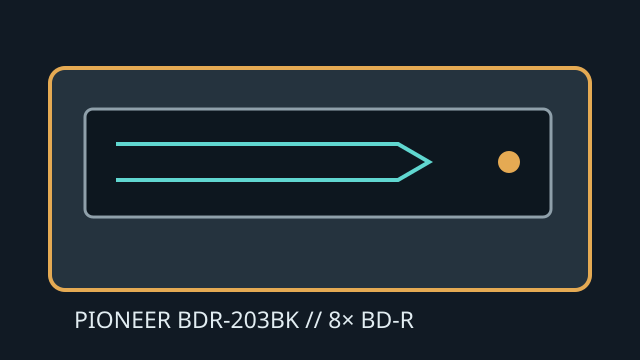

[ INTERNAL BLU-RAY WRITER ]
Pioneer BDR-203BK
Internal SATA Blu-ray/DVD/CD writer with BD-R recording up to 8×. Ratings are media- and mode-dependent and should be checked against the exact blank-media type.

IDENTIFICATION: Pioneer BDR-203BK. Similar Pioneer BDR-203 variants may have different region, firmware or OEM details.
Documented specifications
| Media read/write formats | Reads BD-ROM, BD-R/RE, DVD-ROM, DVD±R/RW, DVD±R DL and CD-ROM/R/RW. Writes BD-R/RE, DVD±R/RW, DVD±R DL and CD-R/RW. It does not claim BDXL or UHD playback. |
|---|---|
| Maximum speeds | BD-R write up to 8×; BD-RE up to 2×. DVD±R up to 16×; DVD±R DL up to 8×; DVD-RW up to 6× and DVD+RW up to 8×; CD-R up to 32× and CD-RW up to 24×. BD-ROM read speed is media/mode dependent. |
| Interface and physical bay | Internal 5.25-inch half-height tray mechanism using SATA data and power. Desktop case must provide a compatible bay, mounting points, cable reach and clearance. |
| Host and firmware compatibility | Requires motherboard/controller SATA support and an OS/driver stack that recognizes optical ATAPI devices. Blu-ray playback/authoring software is separate. Match firmware to BDR-203BK and verify media support before burning. |
Manufacturer and manual sources
- Pioneer BDR-203BK operating instructionsModel-specific instructions and specifications.
- Pioneer BDR-203 command referenceRelated technical reference for the BDR-203 mechanism family; cross-check exact suffix.
- Pioneer BDR-203 instructionsAdditional manual access for this series.